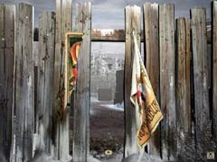

| 概要 | 地図 |
| 淡いヒント集 | ヒント集 | 的確なヒント集 |
| 攻略最短ルート |
| 場所選択に戻る |
ロマンスバーグ(前半)

石炭を入れる装置が故障している原因はガス欠である。柱に付いた赤いスイッチを押せば分かるだろう。それでは、柱にかかっているガソリンタンクを入手して、ガソリンを探さねばならない。 
ガソリンは、この兄弟の家にある。この兄弟、どう交渉してもガソリンを分けようとはしない。こうなれば、強硬手段をとるしかないだろう。敷地に忍び込むルートを探すのだ。 オープニングのムービーにヒントが隠されていることを知っている人はどれくらいいるのだろうか? この囲いには一カ所だけ侵入できる場所がある。   ポスターが貼ってあるので、それを破り中へ入ろう。  
中に入っても、うまくやらなければ見つかってしまう。画像中央に置いてある箱を調べよう。中に一匹のユーキーが捕まっている。 この箱のかんぬきを外し、ユーキーを外へ出してみよう。家の中は大混乱となり、あなたがガソリンを盗む余裕もできるだろう。 |
| 場所選択に戻る |
| 概要 | 地図 |
| 淡いヒント集 | ヒント集 | 的確なヒント集 |
| 攻略最短ルート |
Syberia II
| 目次へ戻る | ページの上部へ |